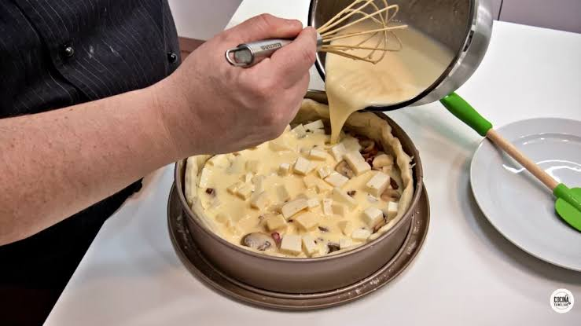

Preparaciones a base de huevo · Clase 8
Preparaciones saladas
Mezclas y elaboraciones utilizadas como base para diferentes preparaciones de cocina.
A base de huevo · Clase 8
Aparato para quiche
Mezcla cremosa elaborada con huevo, lácteos y queso, utilizada como relleno para preparar quiches.
Porciones
1
Rendimiento
700 ml
Preparación
10 min
Temperatura de servicio
N/A
Ingredientes
| Ingrediente | Unidad | Cantidad |
|---|---|---|
| Leche | ml | 250 |
| Crema | ml | 250 |
| Huevo | pzas. | 2 |
| Yemas de huevo | pzas. | 2 |
| Nuez moscada | C/S | Al gusto |
| Queso parmesano | g | 75 |
| Queso manchego | g | 75 |
| Sal | C/S | Al gusto |
| Pimienta | C/S | Al gusto |
Mise en place
- Rallar los quesos.
- Rallar la nuez moscada.
Preparación
- En un bowl mezclar los huevos y las yemas.
- Agregar la crema y batir. Incorporar la leche, la sal, la pimienta, la nuez moscada y uno de los dos quesos.
- Mezclar hasta integrar todos los ingredientes.
- Reservar el queso restante para colocarlo sobre la quiche antes de hornear.
Dato importante
El aparato para quiche funciona como relleno de la preparación. Al hornearse, los huevos ayudan a que la mezcla cuaje y adquiera una consistencia firme y cremosa.
Ayuda visual
